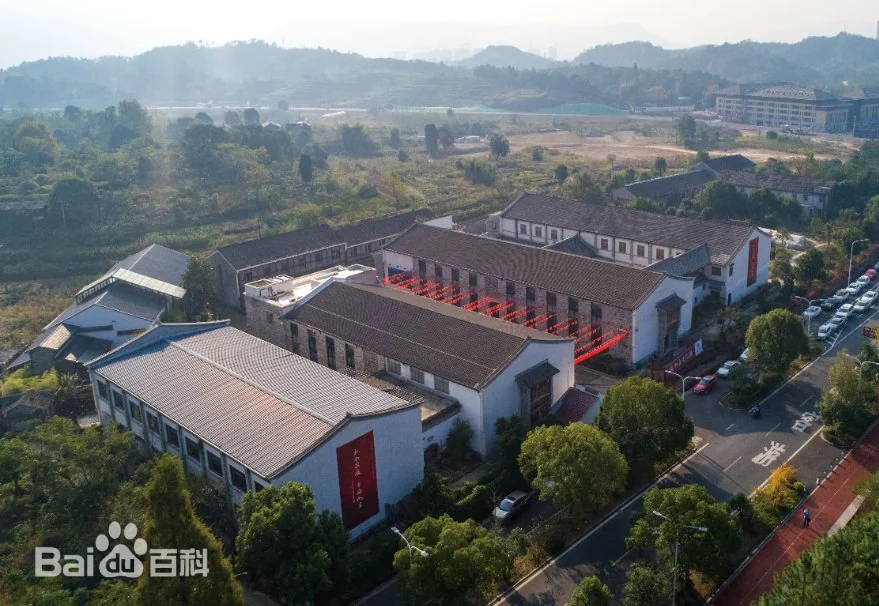
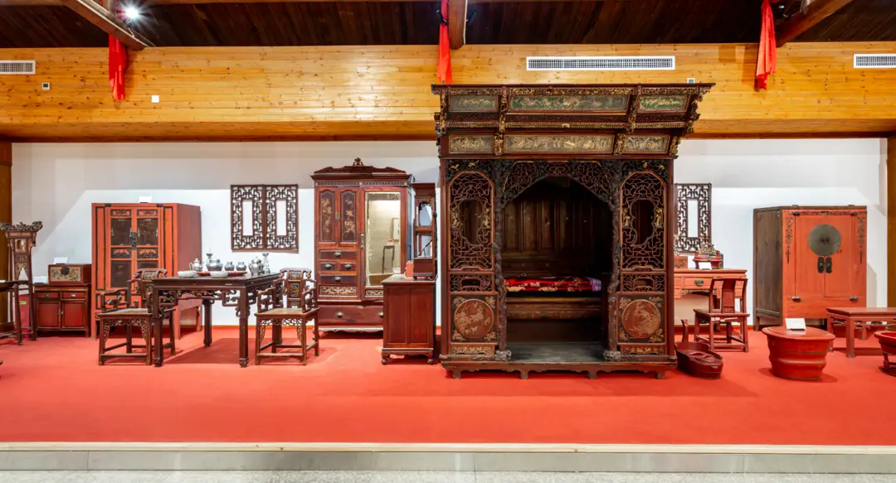

1938 年春，32 岁的陈作霖回到家乡天台，这位从上海大夏大学毕业的青年，此时已秘密加入中国共产党。受中共台州特委指派，他的任务是在天台建立党组织，动员群众开展抗日斗争。初回家乡，陈作霖面临的最大难题是 “人心涣散”：畲族与汉族群众因土地纠纷时有摩擦，乡绅们对 “共产党” 心存疑虑，普通农民则担心 “抗日会引来日军报复”—— 如何打破隔阂、凝聚力量，成为他首要解决的问题。
陈作霖想到了天台的 “和合文化”。他以 “乡贤” 身份，在 “乡贤祠”（和合人间文化馆前身）举办 “和合座谈会”，邀请畲族族长、汉族乡绅、农民代表参加。会上，他拿出《天台山和合志》，引用 “和而不同”“天下大同” 的理念，说 “日军侵华，就像打破了我们共同的‘家’，畲汉是兄弟，乡绅与农民是邻里，只有团结一心，才能守住家园”。为化解畲汉土地纠纷，他提出 “抗日期间暂免租税，战后共同开垦荒地” 的方案，得到双方认可；针对乡绅的疑虑，他承诺 “党组织尊重乡贤财产，只动员自愿捐粮支援前线”。
1940 年 5 月，日军轰炸天台县城后，陈作霖在 “乡贤祠” 成立 “抗日救亡服务站”，自任站长。他带头捐出家中积蓄，购置药品与粮食；畲族族长蓝阿婆则发动畲族妇女，连夜赶制 500 余双布鞋送给游击队；乡绅王敬之不仅捐赠 100 担粮食，还利用自己的商铺作为 “秘密联络点”，为党组织传递情报。服务站成立半年内，就动员 300 余名青年加入抗日自卫队，募集物资折合当时法币 2 万余元 —— 这些物资通过 “群众运输队”，源源不断送往浙东抗日根据地。


1942 年 10 月，日军占领天台平桥镇后，计划进攻天台县城。陈作霖组织 “情报传递网”：汉族农民以 “送菜” 为名，潜入日军驻地打探消息；畲族青年则利用山区小路，将情报快速送往游击队。一次，日军准备夜袭抗日自卫队驻地，畲族青年蓝小龙冒着生命危险，在深夜翻山越岭，跑了 20 多里路，及时将情报送达，使自卫队提前转移，避免了损失。
1943 年冬，由于叛徒出卖，陈作霖的身份暴露，国民党反动派悬赏捉拿他。在群众的掩护下，他先后躲藏在畲族村寨的山洞里、乡绅王敬之的商铺阁楼中，最终安全转移至浙南根据地。离开前，他对前来送行的群众说：“我走了，但‘和合’的精神还在，只要大家团结一心，胜利一定属于我们。”1945 年抗战胜利后，陈作霖回到天台，继续领导群众开展解放斗争，1949 年天台解放后，他担任天台县第一任教育局长，致力于 “和合文化” 与革命精神的传承。如今，和合人间文化馆红色展区内，专门设有 “陈作霖事迹展柜”，陈列着他当年使用的笔记本、捐赠物资的收据等文物，见证着一位 “红色乡贤” 以和合理念凝聚群众的革命历程。
陈作霖的革命实践，深刻体现了 “社会意识对社会存在的反作用这一马克思主义基本原理。“和合文化” 作为天台地区的本土社会意识，在陈作霖的引导下，从 “传统文化理念” 转化为 “抗日斗争的实践力量”—— 它化解了畲汉矛盾、消除了乡绅疑虑，使不同群体形成 “抗日统一战线”，印证了 “先进的社会意识能够促进社会存在的发展”。同时，陈作霖的工作方法也体现了 “具体问题具体分析” 的辩证法思想：针对不同群体（畲族、汉族、乡绅、农民）的特点，采用不同的动员策略，而非 “一刀切”，这正是 “矛盾特殊性” 原理在革命实践中的灵活运用。此外，群众积极参与捐粮、传递情报、掩护党员等行动，充分印证了 “人民群众是历史的创造者”，没有群众的支持，党组织的抗日斗争便失去了物质与精神根基。
返回